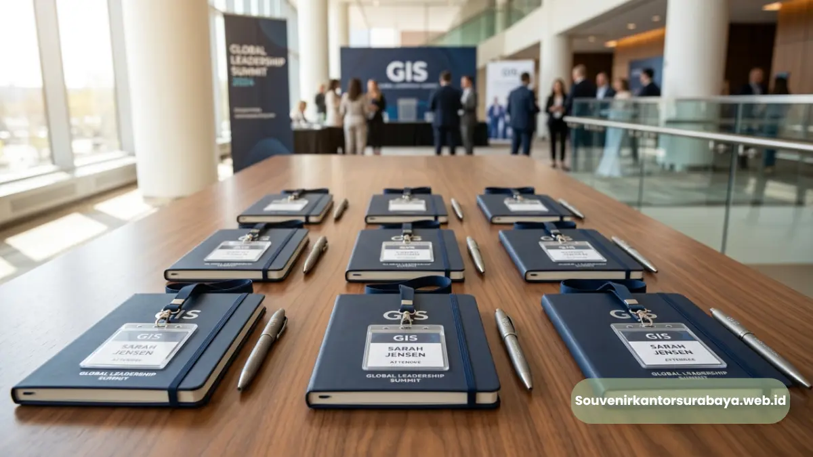
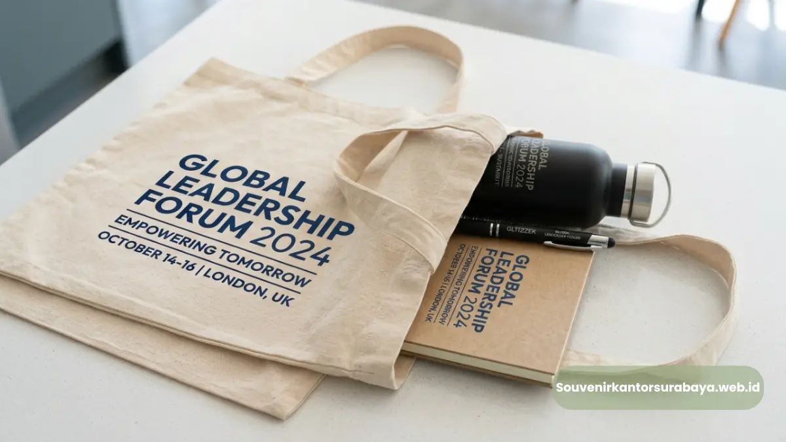
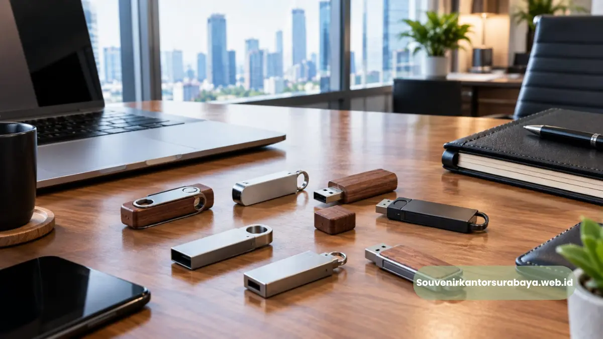
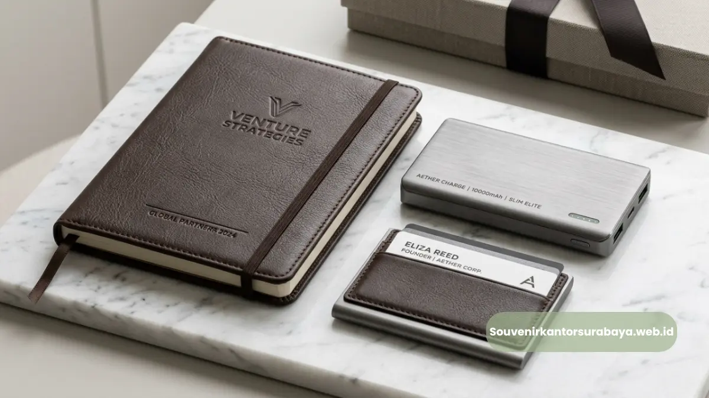

- Apa Fungsi Souvenir dalam Acara Seminar atau Corporate Event?
- Mengapa Souvenir Acara Perlu Disesuaikan dengan Tema Seminar?
- Produk Apa yang Paling Cocok untuk Souvenir Peserta Seminar?
- Bagaimana Menentukan Anggaran Souvenir untuk Corporate Event Berskala Besar?
- Bagaimana Proses Pemesanan Souvenir Kantor untuk Acara Korporat di Surabaya?
Souvenir Kantor Surabaya untuk Seminar & Corporate Event
Souvenir kantor Surabaya untuk seminar dan corporate event adalah paket merchandise yang dibagikan kepada peserta acara sebagai bentuk apresiasi sekaligus media branding perusahaan penyelenggara.
Penyediaan souvenir yang tepat mampu meningkatkan pengalaman peserta sekaligus memperkuat citra profesional acara yang diselenggarakan, baik untuk seminar internal maupun corporate event berskala besar.
- Souvenir seminar berfungsi sebagai apresiasi peserta sekaligus media branding acara dan perusahaan penyelenggara.
- Pemilihan souvenir sebaiknya mempertimbangkan tema acara, jumlah peserta, dan anggaran yang tersedia.
- Produk fungsional seperti alat tulis dan tumbler menjadi pilihan paling praktis untuk souvenir seminar berskala besar.
- Waktu pemesanan yang tepat membantu memastikan kualitas produksi dan pengiriman souvenir berjalan lancar.
- Souvenir Kantor Surabaya siap membantu kebutuhan souvenir acara korporat Anda di wilayah Surabaya dan sekitarnya.
Apa Fungsi Souvenir dalam Acara Seminar atau Corporate Event?
Souvenir dalam acara seminar atau corporate event berfungsi sebagai bentuk apresiasi kepada peserta, media pengingat acara, sekaligus sarana branding bagi perusahaan atau instansi penyelenggara.
Ketika peserta menerima souvenir yang berkualitas dan relevan dengan tema acara, mereka cenderung mengasosiasikan pengalaman positif tersebut dengan penyelenggara acara.
Hal ini penting terutama bagi perusahaan yang menyelenggarakan seminar sebagai bagian dari strategi employer branding atau customer engagement jangka panjang.
Selain manfaat bagi peserta, souvenir seminar juga berperan sebagai dokumentasi tidak langsung. Produk dengan cetak nama acara atau logo perusahaan yang terus digunakan peserta setelah acara berakhir memberikan eksposur brand berkelanjutan tanpa biaya tambahan.
Mengapa Souvenir Acara Perlu Disesuaikan dengan Tema Seminar?
Souvenir acara perlu disesuaikan dengan tema seminar agar pesan dan kesan yang ingin disampaikan penyelenggara dapat tersampaikan secara konsisten kepada peserta.
Misalnya, seminar dengan tema keberlanjutan lingkungan akan lebih relevan menggunakan souvenir berbahan ramah lingkungan, sementara seminar dengan tema teknologi dapat menggunakan souvenir berbasis perangkat elektronik ringan seperti power bank atau flashdisk custom.
Kesesuaian tema ini membantu memperkuat pesan acara sekaligus menciptakan pengalaman yang lebih terintegrasi bagi peserta.

Baca Juga
Produk Apa yang Paling Cocok untuk Souvenir Peserta Seminar?
Produk yang paling cocok untuk souvenir peserta seminar adalah item praktis dan ringan seperti notebook, pulpen, tumbler, tote bag, dan flashdisk, karena mudah dibawa dan memiliki tingkat penggunaan tinggi setelah acara berakhir.
Notebook dan pulpen menjadi kombinasi paling umum karena relevan dengan aktivitas mencatat selama seminar berlangsung, sekaligus tetap digunakan peserta dalam kegiatan kerja sehari-hari setelahnya.
Tumbler custom logo menjadi pilihan yang semakin diminati karena mendukung gaya hidup lebih ramah lingkungan sekaligus memberikan eksposur brand jangka panjang.
Tote bag atau goodie bag berguna sebagai wadah materi seminar sekaligus dapat digunakan kembali oleh peserta setelah acara.
Flashdisk custom cocok untuk seminar yang menyertakan materi presentasi dalam bentuk digital, sekaligus berfungsi sebagai media penyimpanan praktis bagi peserta.
Pemilihan kombinasi produk tersebut dapat disesuaikan dengan anggaran dan jumlah peserta acara Anda melalui konsultasi bersama tim souvenir kantor surabaya.
Bagaimana Menentukan Anggaran Souvenir untuk Corporate Event Berskala Besar?
Menentukan anggaran souvenir untuk corporate event berskala besar dilakukan dengan menghitung total anggaran acara secara keseluruhan, kemudian mengalokasikan persentase tertentu khusus untuk kebutuhan souvenir peserta.
Perusahaan umumnya mengalokasikan anggaran souvenir berdasarkan skala prioritas acara; semakin tinggi tingkat formalitas dan jumlah peserta VIP, semakin besar pula porsi anggaran yang dialokasikan untuk souvenir berkualitas premium.
Untuk peserta umum dalam jumlah besar, perusahaan dapat memilih souvenir dengan harga per unit lebih efisien namun tetap mempertahankan kualitas dan relevansi dengan tema acara.
Bagaimana Proses Pemesanan Souvenir Kantor untuk Acara Korporat di Surabaya?
Proses pemesanan souvenir kantor untuk acara korporat di Surabaya umumnya dimulai dari konsultasi kebutuhan, pemilihan produk, penentuan desain custom, produksi, hingga pengiriman ke lokasi acara.
Tahap konsultasi menjadi langkah penting untuk memastikan jenis produk, jumlah pesanan, dan anggaran sesuai dengan kebutuhan acara.
Setelah kebutuhan disepakati, tim produksi akan membantu menentukan desain custom logo atau nama acara pada produk yang dipilih.
Proses produksi kemudian dilakukan dengan estimasi waktu yang disesuaikan jumlah pesanan, sebelum akhirnya souvenir dikirimkan ke lokasi acara sesuai jadwal yang telah ditentukan.
Agar acara seminar atau corporate event Anda di Surabaya berjalan lancar dengan souvenir yang berkualitas dan tepat waktu, segera konsultasikan kebutuhan Anda bersama souvenirkantorsurabaya.web.id sejak tahap perencanaan acara.
- Souvenir seminar berfungsi ganda sebagai apresiasi peserta dan media branding acara maupun perusahaan.
- Pilih produk souvenir yang relevan dengan tema acara dan praktis digunakan peserta setelah acara berakhir.
- Rencanakan anggaran dan waktu pemesanan souvenir sejak tahap awal persiapan acara.
- Percayakan kebutuhan souvenir seminar dan corporate event Anda di Surabaya kepada souvenir kantor surabaya.

Hawa Nadira
Tim penulis CorporateGifts ID berfokus pada strategi souvenir kantor, merchandise korporat, dan inovasi brand untuk klien B2B.
Keahlian: Branding perusahaan, produksi souvenir, paket event, desain materi promosi.
Artikel Terkait

Seminar Kit Perusahaan untuk Acara Corporate
Temukan seminar kit perusahaan yang rapi, fungsional, dan sesuai identitas brand untuk seminar, meeting, pelatihan, dan event korporat.
Baca Selengkapnya
Flashdisk Custom Logo untuk Kantor Jakarta
Flashdisk custom logo perusahaan menjadi pilihan merchandise teknologi untuk kantor yang membutuhkan souvenir fungsional.
Baca Selengkapnya
Gift Set Kantor Elegan untuk Mitra Bisnis, Ini Pilihannya
Paket souvenir kantor elegan dengan produk bernuansa formal seperti notebook kulit, tumbler stainless, dan alat tulis metal.
Baca Selengkapnya